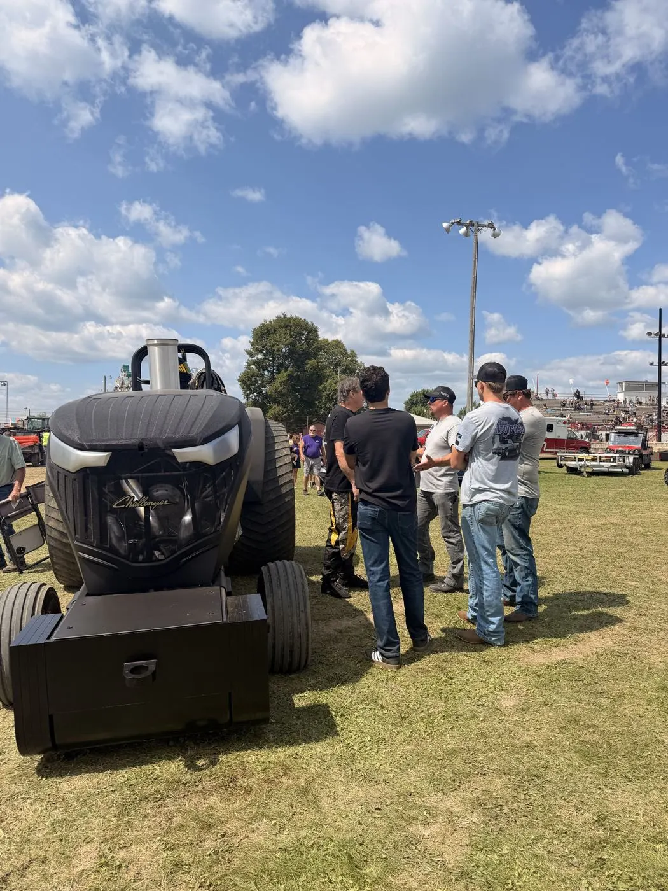

01 · 2014 to 2020
Twelve years in the making
It started in Tomah, Wisconsin, with one idea. Chris had always been a heavy metal fan, so when he decided to build a pulling tractor, the name was never up for debate.
The first bolt went in in February 2020. Then came nights and weekends stolen from work and family, sketches redrawn more times than anyone can count, and a shop in Waterloo that the whole family turned into a second home. Building Heavy Metal was never a solo job.